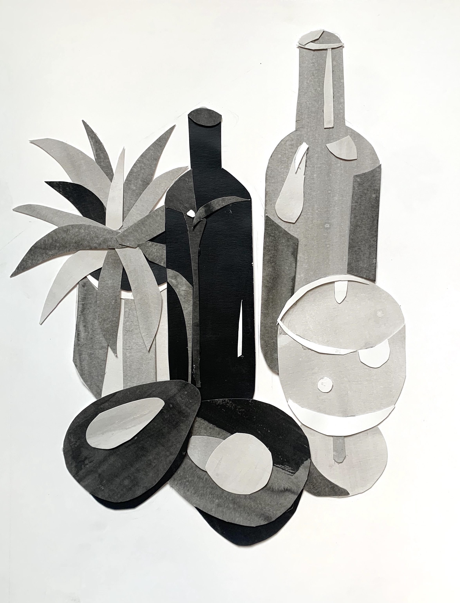

Ink Wash Collage
Black india ink on paper, 11" x 14"
This collage was created using black india ink and paper: using water and various amounts of ink, I created different shades of ink wash on pieces of paper. I set up a still-life of different objects that had a culinary theme, including olive oil, avocados, wine, and wine glasses. I cut out varying shapes from the different ink wash papers, piecing them together to create a collage. I used the lighter wash to create highlights and the darker washes to create shadows.